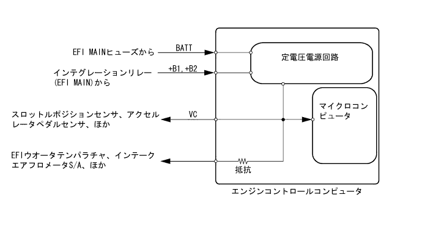
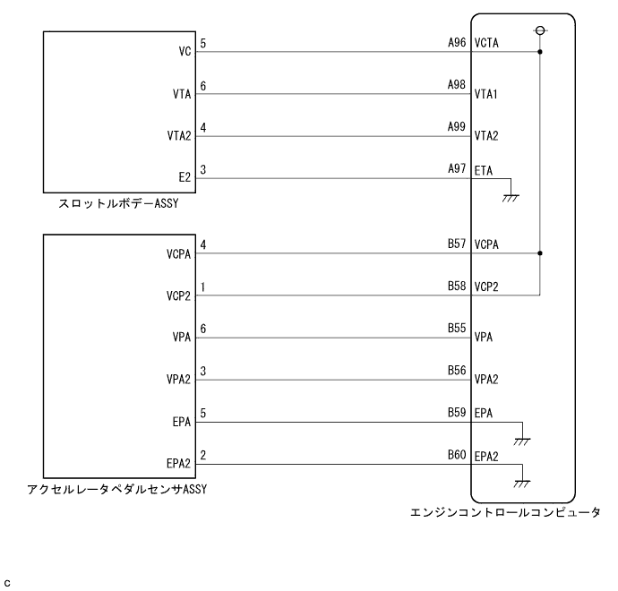
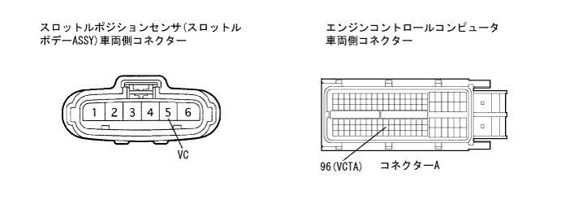
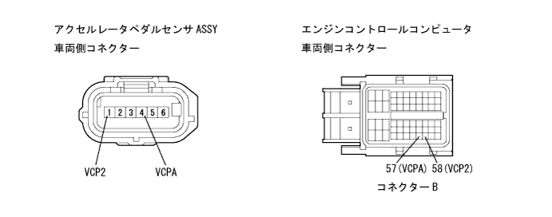

EFI System (2GR-FE) VC Power Source Circuit |


| Step 1 | Check that Check Engine Warning Light Comes On |
Turn the IG ON.
Check that the check engine warning light in the combination meter assembly comes on.
| Result | Proceed to |
|---|---|
| Check engine warning light does not come on | A |
| Check engine warning light comes on | B |
|
| ||||
| A | |
| Step 2 | Read TaSCAN Data |
Connect SST (TaSCAN) to DLC3.
Turn the IG ON.
Check that communication is possible between SST (TaSCAN) and the engine control computer.
| Result | Proceed to |
|---|---|
| Does not communicate | A |
| Communicates | B |
|
| ||||
| A | |
| Step 3 | Inspect Wire Harness and Connector (Engine Control Computer - Throttle Body Assembly) |
Disconnect the throttle body assembly connector.
Turn the IG ON.
Inspect the check engine warning light in the combination meter assembly.
| Result | Proceed to |
|---|---|
| Does not come on | A |
| Comes on | B |
|
| ||||
| A | |
| Step 4 | Inspect Wire Harness and Connector (Engine Control Computer - Accelerator Pedal Sensor Assembly) |
Disconnect the accelerator pedal sensor assembly connector.
Turn the IG ON.
Inspect the check engine warning light in the combination meter assembly.
| Result | Proceed to |
|---|---|
| Does not come on | A |
| Comes on | B |
|
| ||||
| A | |
| Step 5 | Inspect Wire Harness and Connector (Engine Control Computer - Throttle Position Sensor) |
for reference.Disconnect the throttle position sensor connector.
Disconnect connector A of the engine control computer.
Using SST (Toyota electrical tester), measure the resistance between the terminals. (For the terminals of ECU,)

| Tester Connection (Terminal Symbol) | Condition | Standard |
|---|---|---|
| Between A96 (VCTA) and 5 (VC) - Body ground | Always | 10k Ω or more |
|
| ||||
| OK | |
| Step 6 | Inspect Wire Harness and Connector (Engine Control Computer - Accelerator Pedal Sensor Assembly) |
for reference.Disconnect the accelerator pedal sensor assembly connector.
Disconnect connector B of the engine control computer.
Using SST (Toyota electrical tester), measure the resistance between the terminals. (For the terminals of ECU,)

| Tester Connection | Condition | Standard |
|---|---|---|
| Between B58 (VCP2) and 1 (VCP2) - Body ground | Always | 10k Ω or more |
| Between B57 (VCPA) and 4 (VCPA) - Body ground | Always | 10k Ω or more |
|
| ||||
| OK | ||
| ||